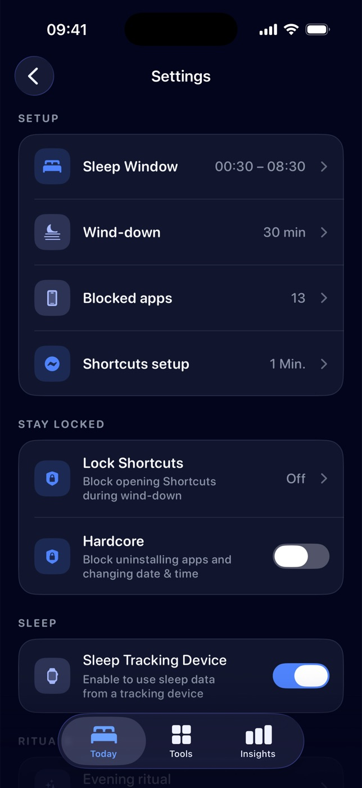
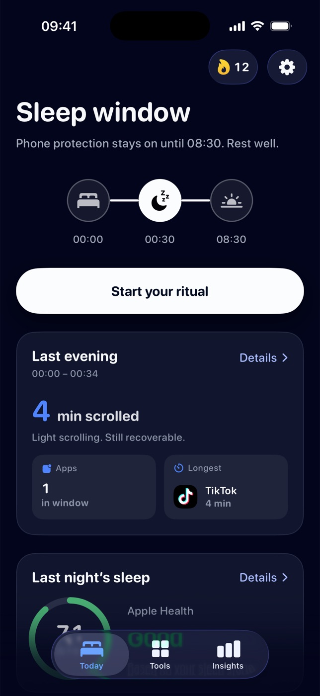
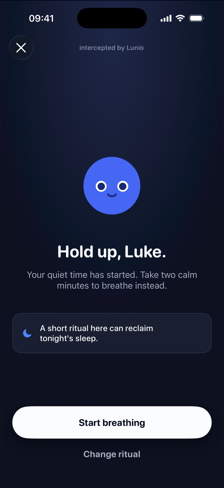
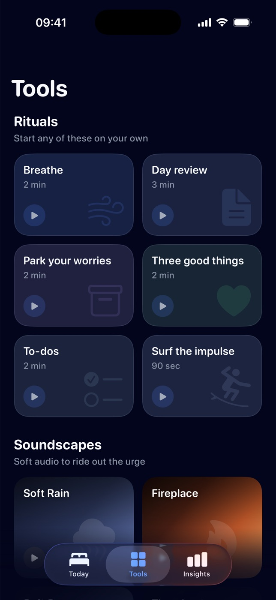
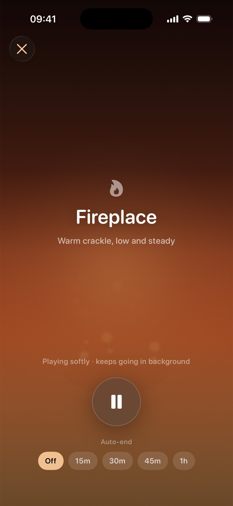
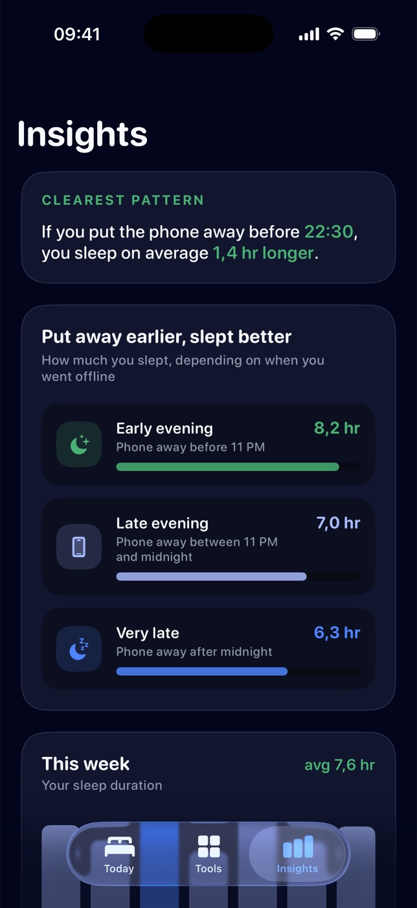

23:12 Bed. Phone. Again.
One more video,
then sleep.
You've said that four times tonight. Lunio pauses the apps that keep you up and hands you a two-minute ritual instead.
00:00 Wind-down starts
Pick a bedtime once.
Lunio keeps it.
Set your sleep window and choose which apps get paused. Thirty minutes before, your phone starts winding down with you.
- Sleep window00:30 – 08:30
- Wind-down30 min
- Blocked apps13
Open a blocked app and Lunio steps in with a short ritual first. If you really need it, you can still get through.


intercepted by Lunio
Hold up.
Your quiet time has started. Take eight calm seconds to breathe instead.
A short ritual here can reclaim tonight's sleep.

00:34 Instead of the scroll
Two minutes.
Then the urge is gone.
Six tiny rituals, each short enough that you'll actually do them. Lunio suggests one when you reach for a blocked app. Or start one on your own.
- Breathe2 min
- Day review3 min
- Park your worries2 min
- Three good things2 min
- To-dos2 min
- Surf the impulse90 sec

01:00 Still awake?
Put the phone down.
Leave the sound on.
Soft audio to ride out the urge. It keeps playing in the background while the screen stays off. Go on, press one.

03:00
Nothing happens here anymore.
No autoplay. No “one more.” Just sleep.
07:10 Morning, with proof
Put it away earlier.
Sleep longer.
Lunio reads your sleep from Apple Health and lines it up with the moment you put your phone away. The pattern gets hard to ignore.
Clearest pattern
If you put the phone away before 22:30, you sleep on average 1.4 hr longer.

08:30 Phone protection off
Good morning.
That's the whole night. Tonight, try it for real.
Free on the App StoreDownload Lunio